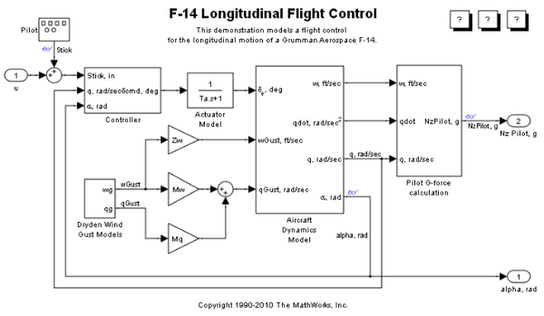
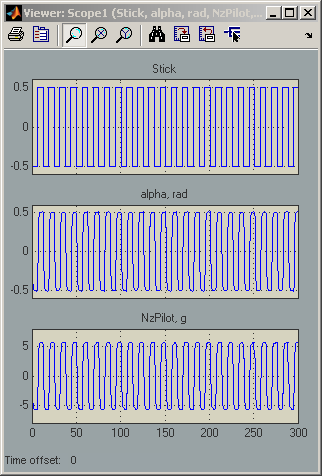

Introduction to Accelerating Models
Simulink® Accelerator™ speeds up the execution of your model, by creating and compiling C code that takes the place of the interpretive code that Simulink uses when in Normal mode (that is, when Simulink® is not in Accelerator mode). Simulink Accelerator generates the C code from your Simulink model and invokes the MATLAB® mex function to compile and dynamically link the generated code to Simulink. This code generation and compilation process happens the first time you accelerate the model and any time the model changes are significant enough to require re-generation (for example, the addition of a block).
The following example, with the slAccelDemoF14 model, illustrates the use of Simulink Accelerator.
Contents
Measuring the Non-accelerated Time
Open the slAccelDemoF14 model and set the stop time to 300 seconds. Simulate the model and time how long it takes using TIC/TOC.
modelName = 'slAccelDemoF14'; open_system(modelName) set_param(modelName,'stoptime','300') tic sim(modelName) toc
Elapsed time is 1.642313 seconds.
Turning on the Accelerator
Simulink Accelerator can be activated by selecting Accelerator from the Simulink Simulation menu or by issuing a set_param command at the MATLAB command prompt.
set_param(modelName,'SimulationMode','Accelerator')
Creating a Temporary Working Directory
Since running in accelerated mode creates some files, first move to a temporary area.
originalDir = pwd; tempDir = tempname; mkdir(tempDir) cd(tempDir)
Building the Accelerated Model
Build the accelerated model and simulate it. When running in Accelerator mode, you can start the model by selecting Start from the Simulation Menu or by running the command:
sim(modelName)
at the MATLAB prompt. In either case, the progress of the code generation process will be displayed in the MATLAB command window. To suppress this display wrap the sim command inside an evalc.
evalc('sim(modelName);');
Simulating the Accelerated Model
Simulate the model again. Notice the model simulation runs much faster on subsequent runs.
tic sim(modelName) toc
Elapsed time is 0.633577 seconds.

Changing a Tunable Parameter and Simulating the Accelerated Model
Change the value of one of the tunable parameters in the model and simulate the model again. Notice the accelerated version of the model does not have to be re-generated and so the simulation still runs more quickly in Accelerated mode than in Normal mode.
modelWorkspace = get_param(modelName,'ModelWorkspace'); evalin(modelWorkspace,'Mw=Mw*2;') tic sim(modelName) toc
Elapsed time is 0.650986 seconds.
Cleaning Up
Close the model and remove the generated files.
bdclose(modelName) clear([modelName,'_acc']) cd(originalDir) rmdir(tempDir,'s')